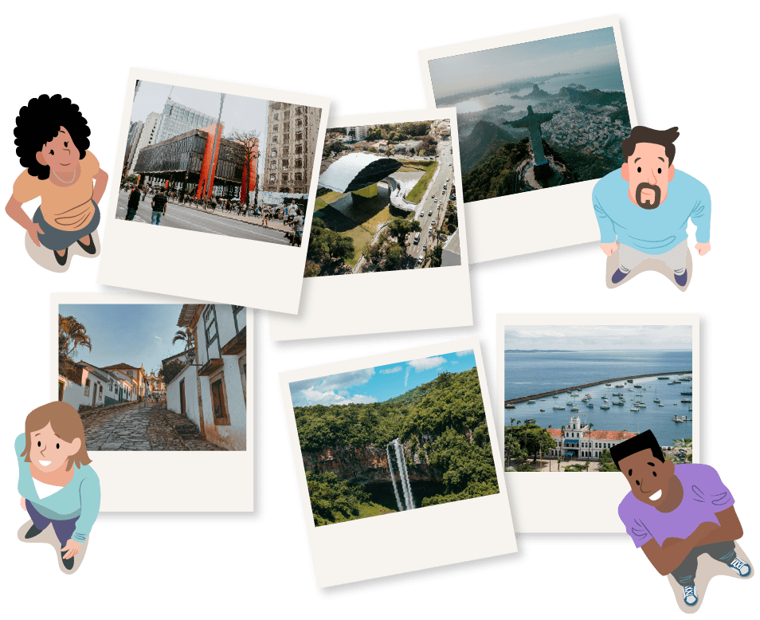
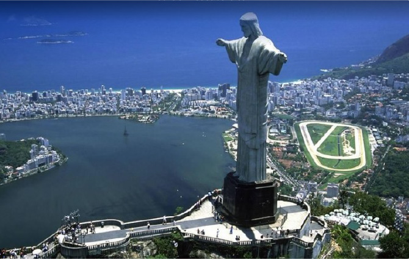
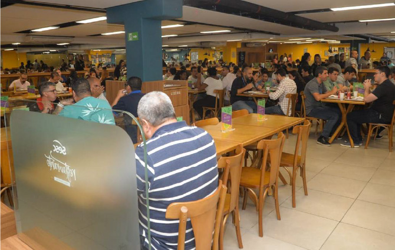
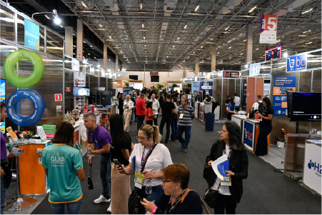

Segmentação no turismo: mercado e produto turístico, tendências e oportunidades de mercado
A segmentação do turismo é uma ferramenta de planejamento, que possibilita a oferta de experiências
de acordo com o gosto do visitante. Representa, ainda, um importante instrumento para atingir os
mais diversos públicos, porque organiza a entrega de acordo com as expectativas de cada perfil de
viajante. Essa divisão se faz necessária como uma estratégia para diferenciar o serviço oferecido,
que poderá ser voltado para o produto que será ofertado ou para o público-alvo a ser atendido.

Para o Ministério do Turismo, os segmentos do turismo são categorias específicas que agrupam
diferentes tipos de atividades e serviços voltados a atender públicos com interesses, perfis e
necessidades distintas. Esses segmentos permitem que o setor turístico ofereça experiências mais
direcionadas e adequadas às expectativas dos viajantes.
Para a segmentação do turismo ser efetiva, o Ministério do Turismo ressalta que é necessário conhecer
profundamente as características de cada destino, ou seja, a oferta (atrativos, infraestrutura,
serviços e produtos turísticos). Dessa forma, é possível determinar a demanda real e potencial (as
especificidades dos grupos de turistas que já visitaram um local ou que ainda o visitarão). Quem
entende melhor a demanda e, de acordo com ela, promove a qualificação ou o aperfeiçoamento de
seus
destinos e roteiros tem mais facilidade de inserção, posicionamento ou reposicionamento no
mercado.
Mercado e produto turístico
Mercado é o lugar onde pessoas trocam produtos e serviços com outras, considerando sempre a
disponibilidade da oferta existente e a procura pelo bem ou serviço oferecido. O processo de troca e
a existência do mercado estão associados a cinco condições essenciais (KOTLER; KELLER, 2006):
Que existam pelo menos duas partes.
Que todas as partes tenham algo que possa ter valor para as outras partes.
Que todas as partes tenham condição de comunicação e entrega.
Que todas as partes estejam livres para aceitar ou recusar a troca.
Que todas as partes acreditem ser proveitoso participar dessa negociação.
Nesse cenário, cabe destacar também quatro elementos básicos que compõem o mercado turístico:
Clique ou toque para visualizar o conteúdo.
Formada por um conjunto de visitantes, ou potenciais visitantes, de bens e serviços
turísticos.
Composta pelo conjunto de produtos, serviços e organizações envolvidas ativamente na
experiência turística.
Base física na qual tem lugar a conjunção ou o encontro entre a oferta e a demanda, e
onde se situa a população residente (que mesmo não sendo em si mesma um elemento
turístico, é considerada um importante fator de coesão ou desagregação no
planejamento turístico).
Empresas e instituições cuja principal função é facilitar a inter-relação entre a
demanda e a oferta. São operadoras de turismo e agências de viagens, empresas de
transporte regular e órgãos públicos e privados que organizam ou promovem o turismo.
Para que a demanda turística por uma determinada localidade seja atendida, a oferta
precisa estar
estruturada para receber essa demanda. Os atrativos são a peça principal para essa estruturação, mas
esses elementos não bastam para que se tenha um produto turístico. É necessário que existam
outros
serviços agregados, como hospedagem, alimentação, transporte e entretenimento, para que o produto
turístico proporcione uma experiência completa ao viajante. O Ministério do Turismo (2010) assim
define o produto turístico “o conjunto de atrativos, equipamentos e serviços turísticos acrescidos
de facilidades, localizados em um ou mais municípios, ofertado de forma organizada por um
determinado preço”.
Nas imagens a seguir, é possível ver um exemplo de um produto turístico estruturado para
receber sua
demanda. O monumento Cristo Redentor, na cidade do Rio de Janeiro, é um equipamento turístico muito
visitado no Parque Nacional da Tijuca (espaço geográfico), sendo complementado por outros
elementos
essenciais ao turismo. O Cristo Redentor é inserido em um contexto mais amplo de serviços e
facilidades que atendem à demanda dos visitantes, esses serviços são oferecidos pelos
operadores de
mercado. Incluem opções de transporte que facilitam o acesso ao local e opções de
alimentação e
conveniência, além de recursos de hospedagem e entretenimento na cidade, que se integram para
proporcionar uma experiência turística completa.
Clique ou toque nas setas para visualizar o conteúdo.

Vista panorâmica do Cristo Redentor no Rio de Janeiro
Fonte: Tripadvisor (c2025)
Transporte oficial para acesso ao atrativo Cristo Redentor
Fonte: Tripadvisor (c2025)
Frente do Hotel Sesc Copacabana no Rio de Janeiro
Fonte: Sesc RJ (2024)

Restaurante do hotel Sesc Norte Shopping
Fonte: CNC (2020)
Vista panorâmica do Cristo Redentor no Rio de Janeiro
Fonte: Tripadvisor (c2025)
Fotografia com visão panorâmica do Cristo Redentor, um dos principais ícones
turísticos do Brasil, situado no Rio de Janeiro Ao redor do Cristo, pode-se ver uma vista
ampla da cidade, compondo um cenário deslumbrante que valoriza ainda mais a experiência dos
turistas.
Transporte oficial para acesso ao atrativo Cristo Redentor
Fonte: Tripadvisor (c2025)
Fotografia de uma van de transporte turístico desembarcando visitantes no
Cristo Redentor, no Rio de Janeiro. No fundo, é possível ver parte da estátua do Cristo
Redentor, destacando a proximidade do ponto de desembarque ao monumento. Esse serviço
exemplifica a importância de uma oferta turística completa, que inclui transporte adequado,
contribuindo para uma experiência positiva.
Frente do Hotel Sesc Copacabana no Rio de Janeiro
Fonte: Sesc RJ (2024)
Fotografia da fachada do hotel Sesc Copacabana, no Rio de Janeiro, um
serviço que atende à demanda turística com serviços hospedagem.
Restaurante do hotel Sesc Norte Shopping
Fonte: CNC (2020)
Fotografia do restaurante do hotel Sesc Norte Shopping, um serviço essencial
para o turismo. O local conta com mesas e cadeiras de madeira, em um layout organizado, com
a maioria dos lugares ocupados.
Agora que você está familiarizado com alguns termos conceituais, conheça um pouco mais de cada
segmento, de forma a ampliar seus conhecimentos e estimular suas próprias descobertas. Este material
proporciona a verificação dos potenciais e da vocação turística de cada destino, além de permitir a
identificação do perfil de público destinado a cada atividade.
Não se esqueça de que, para um guia de turismo, é importante analisar cada segmento a fim de
possibilitar a indicação dos locais indispensáveis dentro de um planejamento e da estruturação de um
roteiro turístico e encontrar a melhor forma de conduzir e orientar um grupo em cada uma das
atividades relacionadas a um segmento específico. Conheça os principais segmentos a seguir.
Os tipos de segmentos turísticos prioritários para o desenvolvimento do Brasil, segundo o Ministério
do turismo (2010), totalizam 12 tipologias. É importante destacar que não são os únicos, pois
existem diversos outros segmentos que você deve estar atento para acompanhar as tendências de
mercado e o comportamento do viajante que está em constante mudança.
Clique ou toque na tela para visualizar o conteúdo.
Turismo social
O turismo social compreende as atividades de turismo e lazer para turistas das
camadas sociais menos favorecidas, ou seja, com menor poder de compra. Passeios e
viagens com preços acessíveis são oferecidos para esse público, estimulando o
desenvolvimento econômico e a inclusão social no turismo. Geralmente é organizado
por sindicados, associações e cooperativas para atender às necessidades de férias.
Conforme o Ministério do Turismo, “O Turismo Social é a forma de conduzir e praticar
a atividade turística promovendo a igualdade de oportunidades, a equidade, a
solidariedade e o exercício da cidadania na perspectiva da inclusão”. (BRASIL, 2021,
p. 6). Um exemplo de instituição que trabalha com turismo social é o Sesc, criando
pacotes turísticos econômicos para que o turista tenha acesso ao lazer, um direito
básico da população. Para conhecer mais detalhes, busque na internet por “Turismo
Social Sesc”.
Turistas em embarque de viagem rodoviária
Fonte: Barbosa in Pereira (2021)
Fotografia de um grupo de pessoas esperando para
embarcar em um ônibus de viagem em uma rodoviária. Algumas pessoas estão na fila
de embarque, enquanto outras colocam a mala no porta-malas do ônibus.
Ecoturismo
O ecoturismo é uma modalidade de turismo que promove o contato responsável com o
patrimônio natural e cultural, com o objetivo de preservar o meio ambiente e
valorizar as culturas locais. Ele se diferencia do turismo convencional por estar
focado em práticas sustentáveis, buscando minimizar o impacto ambiental e incentivar
o desenvolvimento das comunidades visitadas. Nesse contexto, o guia de turismo
exerce um papel central que vai além de conduzir o visitante, pois exerce a função
de educador ambiental despertando a consciência do seu público de turistas para o
tema da sustentabilidade. De acordo com o Ministério do Turismo:
Ecoturismo é um segmento da atividade turística que utiliza, de forma
sustentável, o patrimônio natural e cultural, incentiva sua conservação e busca
a formação de uma consciência ambientalista através da interpretação do
ambiente, promovendo o bem-estar das populações (BRASIL, 2021, p. 9).
O ecoturismo geralmente remete a atividades ligadas ao ambiente natural, mas é
necessário destacar que também pode ser praticado em outros ambientes, desde que o
foco seja a sustentabilidade. Por exemplo, quando o guia de turismo direciona os
visitantes para pequenas empresas no destino, como restaurantes e produtores de
artesanato locais, ele também ajuda a desenvolver o turismo sustentável na região.
Curso de observação de aves em sítio no ES
Fonte: Aqui Notícias (2024)
Fotografia diurna mostrando um grupo de pessoas sentadas
em cadeiras, em um ambiente externo, participando de uma atividade de observação
de aves ao ar livre. Algumas pessoas estão olhando para o horizonte, outras
usando binóculos. O local está cercado por vegetação densa, com árvores e
plantas ao fundo, além de montanhas no horizonte.
Turismo cultural
O turismo cultural é uma modalidade que tem como foco principal a apreciação dos
aspectos que representam a cultura de uma localidade, traduzida por meio de seus
locais históricos, museus, eventos tradicionais, arte e outras manifestações da
cultura. Essa modalidade é muito abrangente e pode estar presente em diversos
contextos, entretanto, é possível identificar um turista que tem interesse por esse
segmento quando ele deseja saber mais sobre a história e conhecer os hábitos locais,
indicando um turista cultural. Conforme o Ministério do Turismo:
Turismo Cultural compreende as atividades turísticas relacionadas à vivência do
conjunto de elementos significativos do patrimônio histórico e cultural e dos
eventos culturais, valorizando e promovendo os bens materiais e imateriais da
cultura (BRASIL, 2021, p. 13).
Ainda, segundo o MTur (2010), o turismo cultural implica experiências positivas para
o visitante devido ao patrimônio histórico e cultural e a determinados eventos
culturais de um local, de modo a favorecer a percepção de seus sentidos e contribuir
para a preservação desses lugares.
No Estado da Bahia, o Pelourinho é um exemplo de turismo cultural, no Centro
Histórico de Salvador. Esse local preserva e celebra as tradições afro-brasileiras,
oferecendo uma experiência que representa a cultural local. Lá os turistas podem
assistir a apresentações de capoeira, uma expressão cultural que combina dança, luta
e música, criada pelos africanos escravizados no Brasil. Também é possível
experimentar pratos típicos, como acarajé, moqueca e vatapá, que são preparados com
ingredientes e temperos da culinária afro-brasileira. Esses pratos são geralmente
vendidos por mulheres baianas vestidas com trajes tradicionais, um retrato autêntico
do turismo cultural.
Capoeira no Pelourinho
Fonte: Unsplash (2020)
Fotografia diurna de uma roda de capoeira ao ar livre no
Pelourinho, Centro Histórico da cidade de Salvador, na Bahia. No centro, há dois
capoeiristas em movimento, realizando golpes e movimentos característicos dessa
expressão cultural. Ao redor deles, outros participantes tocam instrumentos
tradicionais, como o berimbau e o atabaque, que marcam o ritmo da roda. A praça
é pavimentada com pedras portuguesas e cercada por edifícios coloniais, o que
reforça o cenário histórico e cultural.
Turismo de estudos e intercâmbio
O turismo de estudos e intercâmbio é uma modalidade de turismo que combina viagens
com atividades educacionais, nas quais os viajantes buscam aprender e adquirir novas
habilidades, seja por meio de cursos, programas de intercâmbio ou experiências
acadêmicas em outro país ou região. Esse tipo de turismo é comum entre viajantes que
desejam expandir seus conhecimentos, vivenciar outras culturas e aprender novos
idiomas. Conheça sua definição pelo MTur:
O Turismo de Estudos e Intercâmbio é uma modalidade de turismo em que o objetivo
principal é a busca por conhecimento, seja por meio de cursos de curta ou longa
duração, especializações, estágios ou experiências culturais em outros países ou
regiões. Nesse tipo de turismo, as viagens são voltadas para o aprendizado e a
imersão em uma nova cultura, língua ou área de conhecimento, proporcionando um
desenvolvimento pessoal e profissional significativo aos participantes (BRASIL,
2021, p. 19).
Existem muitas agências de turismo especializadas em turismo de intercâmbio, que
oferecem diversas opções voltadas para o estudo em vários níveis de ensino. Segundo
a pesquisa “Selo Belta”, de 2023, a principal motivação para esse tipo de turismo é
o desenvolvimento de carreira.
Essa vivência oferece a oportunidade de desenvolver habilidades e competências
valiosas, além de ampliar a visão de mundo, adquirir uma bagagem cultural
diversificada, desenvolver proficiência em diferentes idiomas e uma desenvolver
a resiliência, pontos bem vistos pelas empresas (BELTA, 2023).
Uma tendência interessante nessa pesquisa é o aumento da participação de
profissionais com idades entre 30 e 49 anos em intercâmbios. Isso evidencia que mais
pessoas estão buscando esse segmento, independentemente de sua faixa etária,
impulsionando o turismo.
Alunos estudando o idioma inglês
Fonte: Pexels (2024)
Fotografia de um grupo de adolescentes concentrados
estudando, sentados, em uma sala de aula, realizando uma atividade de escrita,
em papel. Na parede, ao fundo da sala, há ilustrações de elementos que remetem
ao Reino Unido, como sua bandeira e um telefone público vermelho britânico. A
frase “Learn English” está destacada, indicando que se trata de uma aula de
inglês.
Turismo de esportes
Essa modalidade está diretamente ligada ao esporte como a motivação central para
viajar. O viajante pode estar envolvido com atividades esportivas por meio de sua
participação ativa ou apenas com interesse em observar algum evento esportivo, ser
um expectador. De acordo com o MTur, “Turismo de Esportes compreende as atividades
turísticas decorrentes da prática, envolvimento ou observação de modalidades
esportivas” (BRASIL, 2021, p. 23).
Esse tipo de turismo pode ser representado por pessoas que viajam para assistir a
eventos esportivos, como jogos olímpicos, campeonatos de futebol, fórmula 1, entre
outros. Um exemplo de atividade com a participação ativa do turista são as corridas,
como a de São Silvestre, a mais tradicional do Brasil, na cidade de São Paulo, que
atrai tanto corredores nacionais quanto estrangeiros, além de outros turistas que
visitam a cidade para acompanhar o evento. É relevante destacar que existem várias
agências de turismo no Brasil especialistas nesse segmento, o que indica uma demanda
significativa para esse tipo de atividade.
Atletas correndo
Fonte: Pinto in Saragiotto (2023)
Fotografia diurna de um grupo de atletas homens
participando de uma prova de corrida de rua, passando em frente ao Museu de Arte
de São Paulo (MASP). Eles estão usando tênis e roupas leves com seu número de
inscrição no peito.
Turismo de pesca
O turismo de pesca é uma modalidade voltada para turistas interessados na prática da
pesca amadora. Segundo o MTur (2021), a pesca amadora pode ser definida como
“Atividade de pesca praticada por brasileiros ou estrangeiros, com a finalidade de
lazer, turismo ou desporto, sem finalidade comercial”, ou seja, quem busca esse
segmento tem o objetivo de lazer, e não de venda. Vale destacar que é preciso
conhecer as legislações que envolvem a prática para que seja realizada respeitando o
meio ambiente. Para o MTur, o “Turismo de pesca compreende as atividades turísticas
decorrentes da pesca amadora” (BRASIL, 2021, p. 28). Além disso, quem deseja
trabalhar nesse segmento deve observar algumas regras, como:
Tirar a licença de pesca amadora
Respeitar o defeso
Respeitar as cotas de captura e transporte
Respeitar os tamanhos mínimos de captura
Soltar as espécies proibidas
Não pescar em áreas proibidas
Não introduzir espécies
No Brasil, há competições e eventos voltados para pesca. Esses encontros movimentam a
economia local, gerando emprego e renda para as comunidades. Guias de turismo
especializados, desempenham um papel importante na orientação dos turistas,
garantindo a segurança e o cumprimento das normas ambientais. Para saber mais,
busque na internet as orientações do Ministério do Turismo por “turismo de pesca,
orientações básicas MTur”.
Pescador sendo fotografado em um barco
Fonte: Falcão e Gadelha (2022)
Fotografia diurna de duas pessoas dentro de um barco a
motor em um mangue, cercado pela natureza. Um homem está segurando um peixe e
uma vara de pesca, enquanto outro registra uma fotografia dele.
Turismo náutico
A atividade náutica, quando atrelada ao turismo, tem características que a
diferenciam do simples ato de navegação. O turismo náutico não se configura pela
utilização da embarcação como um simples meio de transporte, mas como principal
motivador da prática turística, ou seja, o “turismo náutico caracteriza-se pela
utilização de embarcações náuticas com a finalidade de movimentação turística”
(BRASIL, 2021, p. 34). O turismo náutico se diferencia dos outros segmentos na
medida em que o seu principal elemento caracterizador é um equipamento náutico. A
embarcação utilizada como meio de transporte turístico constitui, ao mesmo tempo, o
próprio atrativo motivador do deslocamento.
Turistas passeando de barco no mar
Fonte: Pexels (2018)
Fotografia de um barco navegando em um mar azul
cristalino, representando o turismo náutico. O barco é chamado Caravela e tem
dois andares, com vários turistas a bordo, tanto na parte superior quanto na
inferior. Ao fundo, pode-se ver uma ilha com vegetação. O dia está ensolarado,
perfeito para um passeio marítimo.
Turismo de aventura
O turismo de aventura é a modalidade de turismo que envolve a prática de atividades
de aventura em ambientes naturais ou em espaços urbanos ao ar livre. Ele inclui
riscos controlados, uso de técnicas e de equipamentos específicos, adoção de
procedimentos de segurança e respeito ao patrimônio ambiental e cultural. Essas
características exigem do segmento do turismo de aventura profissionalismo e
qualidade, especialmente pela necessidade de gestão da segurança. Assim, os
trabalhadores, os prestadores de serviço, os empreendedores e os gestores precisam
trabalhar diretrizes, normas, regulamentos, certificação e marcos específicos para o
gerenciamento dos riscos. O “Turismo de Aventura compreende os movimentos turísticos
decorrentes da prática de atividades de aventura de caráter recreativo e não
competitivo” (BRASIL, 2021, p. 39). Considerando as sensações advindas da prática
dessas atividades, pode-se facilmente perceber como esse tipo de turismo possibilita
experiências singulares, pois uma viagem de aventura pressupõe o envolvimento do
turista com a prática, a exposição a riscos controláveis e a integração com a
natureza. Desafios como a transposição de corredeiras em botes infláveis, a descida
de cachoeiras em cordas, a travessia de uma ponte móvel entre copas de árvores e a
caminhada entre cânions mostram como o turismo de aventura estimula uma relação
diferenciada do turista com o meio ambiente e proporciona um contato íntimo com a
natureza.
Bungee jumping – salto de ponte com uma corda elástica amarrada
Fonte: Pexels (2022)
Fotografia diurna de uma pessoa presa a cordas
elásticas, com equipamento de segurança, praticando bungee jumping, em um salto
de uma plataforma de madeira suspensa sobre um penhasco. Outras pessoas na
plataforma observam atentamente o momento do salto. O cenário ao redor é
composto por montanhas áridas com um vale profundo.
Turismo de sol e praia
O turismo de sol e praia pressupõe aspectos como recreação, entretenimento e
descanso, associados ao divertimento, à distração ou à contemplação de paisagens. A
combinação desses elementos é o principal fator de atratividade, determinado
especialmente por temperaturas quentes ou amenas, propícias à balneabilidade, assim
o “Turismo de Sol e Praia constitui-se das atividades turísticas relacionadas à
recreação, ao entretenimento ou ao descanso em praias, em função da presença
conjunta de água, sol e calor” (BRASIL, 2021, p. 43). Por essas características, o
turismo de sol e praia é uma das modalidades de turismo mais populares no mundo,
sendo a responsável pela movimentação de grandes fluxos turísticos e, por
conseguinte, pela propagação do turismo de massa. No Brasil, representa um dos
segmentos com maior fluxo turístico, em 2022, em uma pesquisa realizada a pedido da
Embratur, o Brasil ficou em segundo lugar em destino de sol e praia do mundo, entre
brasileiros estrangeiros. Cabe ressaltar ainda que os turistas que viajam com a
motivação principal de visitar praias, muitas vezes, agregam ao seu roteiro outras
atividades fora desse ambiente, como visitas a monumentos históricos, feiras de
artesanato, restaurantes típicos e manifestações artísticas e culturais. Isso
permite que um destino diversifique ainda mais a sua oferta turística, apresentando
diversas possibilidades de contato com a cultura local e a diversidade da fauna e da
flora.
Praia do Futuro, em Fortaleza/Ceará
Fonte: Brasil (2016)
Fotografia diurna panorâmica da Praia do Futuro, na
cidade de Fortaleza, no Ceará. A praia tem areia clara, o céu está azul e o mar
tem ondas suaves. Estão organizadas diversas barracas com toldo de palha e
cadeiras e mesas dispostas sob essas estruturas, oferecendo sombra aos
visitantes. Ao fundo, há uma área com guarda-sóis azuis, além de alguns amarelos
espalhados, indicando que o local é preparado para receber turistas. É um
ambiente típico de uma praia turística, bem estruturada para o lazer e o
conforto dos visitantes.
Turismo de negócios e eventos
É praticado por empresários, executivos, profissionais ou estudantes que viajam para
realizar negócios ou participar de eventos (congressos, feiras, simpósios,
seminários). Em virtude da especificidade da motivação da viagem, esse segmento é
bem delimitado e específico. Basicamente, o turismo de negócios e eventos se
concretiza pela realização de atividades em local distinto do local de residência do
turista, como visitas técnicas, reuniões, exposições, compra e venda de bens e
produtos, palestras e discussões em grupos. Dessa forma, o “Turismo de Negócios e
Eventos compreende o conjunto de atividades turísticas decorrentes dos encontros de
interesse profissional, associativo, institucional, de caráter comercial,
promocional, técnico, científico e social” (BRASIL, 2021, p. 46). Por todos esses
fatores, o segmento de negócios e eventos é bem visto por gestores do turismo, que
lhe dedicam especial atenção, reconhecendo o seu potencial econômico e a
possibilidade de equalizar os efeitos da sazonalidade.

Feira do empreendedor, em São Paulo
Fonte: Agência Sebrae de Notícias (2024)
Fotografia de uma feira de negócios em um grande
pavilhão coberto, com várias pessoas circulando entre os estandes de diferentes
empresas. O público interage, acessando materiais promocionais e conversando. O
espaço é bem iluminado, com estrutura industrial e corredores organizados.
Turismo rural
O turismo rural é uma modalidade que envolve viagens turísticas para áreas rurais. A
motivação dos turistas se fundamenta no interesse em conhecer e vivenciar a relação
do homem com o ambiente rural. O número de propriedades rurais que incorporam
atividade turística tem crescido consideravelmente. Isso se dá em consequência da
demanda por um tipo de turismo que, além de proporcionar uma vivência em um ambiente
natural, agregue experiências mais autênticas com modos de vida distintos.
Além disso, convém ressaltar que o grande benefício do turismo rural é proporcionar a
dinamização social e econômica dos territórios rurais. Com a criação de postos de
trabalho, agregou-se valor aos produtos e aos serviços gerados em propriedades
agrícolas e em empreendimentos rurais, e manifestações culturais e da tradição rural
têm sido valorizadas. Esse tipo de turismo tem como base aspectos do meio rural,
como a produção agropecuária, a paisagem, a tradição e o modo de vida do homem do
campo. Ele é desenvolvido em fazendas, sítios, vilas e distritos rurais. Conforme o
MTur, o “Turismo Rural é o conjunto de atividades turísticas desenvolvidas no meio
rural, comprometido com a produção agropecuária, agregando valor a produtos e
serviços, resgatando e promovendo o patrimônio cultural e natural da comunidade”
(BRASIL, 2021, p. 49).
Muitos moradores urbanos viajam com o intuito de reencontrar suas raízes,
interagir com a comunidade local, participar de suas festas tradicionais,
desfrutar da hospitalidade e do aconchego nas propriedades, conhecer o
patrimônio histórico e natural no meio rural, conviver com os modos de vida,
tradições, costumes e com as formas de produção das populações do interior,
vivenciar novas experiências, buscar novos conhecimentos, saberes, descansar
física e mentalmente, fugir da rotina da vida urbana e adquirir produtos
típicos. Isso somado à necessidade que o produtor rural tem de diversificar sua
fonte de renda e de agregar valor aos seus produtos pode explicar o crescimento
do segmento de turismo rural no Brasil (BRASIL, 2010, p. 16).
O envolvimento da comunidade é uma das premissas para o desenvolvimento do turismo
rural. Ao se trabalhar o segmento, é importante oferecer aos moradores a
possibilidade de descobrir novas formas de olhar e apreciar o lugar onde vivem. Se a
comunidade conhece e valoriza seu patrimônio e se orgulha do que é, ela se torna um
elo importante na interação com o visitante, contribuindo para conduzir o seu olhar
e as suas sensações em relação ao lugar e para sensibilizar os envolvidos na
comercialização do destino. A valorização e a apropriação da herança cultural são
fatores-chave para a preservação e a conservação do patrimônio rural.
Fazenda Vira-Mundo, em Petrópolis/RJ
Fonte: Salsa (2023)
Fotografia diurna de um grupo de visitantes reunido em
uma área ao ar livre, rodeada por árvores altas. As pessoas estão em pé enquanto
um guia conversa com o grupo. O local é uma fazenda, com vegetação abundante e
uma pequena cabana ao fundo. As pessoas vestem roupas confortáveis e casuais,
pois estão participando de visita guiada em um local rural. A cena transmite a
ideia de interação com a natureza e aprendizado coletivo.
Turismo de saúde
Turismo de saúde é uma modalidade de turismo que envolve a viagem de pessoas para
destinos onde possam receber tratamentos médicos, realizar procedimentos estéticos
ou participar de programas de bem-estar. Sendo assim, esse segmento pode ser
subdividido em turismo de bem-estar e turismo médico-hospitalar,
atingindo as
dimensões preventiva e curativa, que abrangem os turistas em busca de médicos
especializados e/ou tratamentos cirúrgicos, e atividades voltadas a relaxamento,
equilíbrio mental e melhoria da qualidade de vida, como spas, retiros de ioga
e
clínicas de emagrecimento. Desse modo, o “Turismo de Saúde constitui-se das
atividades turísticas decorrentes da utilização de meios e serviços para fins
médicos, terapêuticos e estéticos” (BRASIL, 2021, p. 53). Vale ressaltar que ainda
existem poucos destinos turísticos que dispõem de informações sobre a demanda pelo
turismo de saúde. Com o crescimento desse segmento, caberá a ampliação de sua
investigação, considerando a demanda de pessoas em busca de cuidados médicos e
estéticos no país, além de outras atividades relacionadas, como congressos médicos e
feiras de estética, que também movimentam o setor.
Ioga em frente ao mar
Fonte: Jornal Correio do Povo do Paraná (2022)
Fotografia diurna de um grupo de mulheres praticando
ioga em um deck de madeira à beira-mar. Elas estão posicionadas de costas, em
uma postura de alongamento, com uma perna flexionada à frente e os braços
erguidos, cada uma sobre um tapete azul. O local é ensolarado, com vista para o
mar ao fundo e algumas palmeiras e guarda-sóis fechados espalhados. O ambiente é
de bem-estar, relaxamento e prática de atividades ao ar livre, ideal para
aproveitar a natureza e a tranquilidade do mar.
Tendências e oportunidades de mercado
As possibilidades e as oportunidades que existem para aproveitar todo o potencial que os destinos
turísticos apresentam são inúmeras no Brasil. Novos segmentos surgem à medida que mudanças inerentes
ao perfil do consumidor são constatadas e novos avanços tecnológicos entram em cena. O viajante
exige cada vez mais experiências diferenciadas e inovadoras. Frente a esse cenário, os profissionais
do turismo precisam estar atentos a essa dinâmica para entender de que forma impactará no mercado de
trabalho e em sua atuação. Manter-se atualizado, aperfeiçoar-se por meio de capacitação profissional
e participar de eventos do setor são alguns exemplos de estratégias para se manter competitivo
frente às tendências que surgem a todo momento.
Neste conteúdo, você estudou alguns segmentos estabelecidos como prioritários pelo Ministério do
Turismo, contudo, diante das transformações constantes devido à globalização, é preciso observar
também áreas emergentes e tendências no perfil dos viajantes. Dessa forma, serão destacados alguns
segmentos que refletem essas mudanças no comportamento de turistas, com base nas principais
publicações do setor.
Clique ou toque para visualizar o conteúdo.
Esse segmento valoriza experiências gastronômicas autênticas. Seu perfil de viajante
está em busca da imersão na cultura do local, por meio de seus pratos típicos,
festas gastronômicas, workshops sobre técnicas de preparo, e muito mais.
O turismo LGBTQIAPN+ é um segmento que visa atender às demandas da comunidade de
lésbicas, gays, bissexuais, transgêneros, queer, intersexuais,
assexuais,
pansexuais, não binários e outras identidades de gênero e orientações sexuais. Esse
tipo de turismo busca promover destinos, serviços e experiências personalizadas e
seguras para esse público, valorizando a diversidade e o respeito às diferenças.
O turismo sustentável é o segmento que busca o equilíbrio entre as necessidades dos
viajantes e das comunidades receptoras. Seu principal objetivo é promover práticas
turísticas que minimizem os impactos negativos ao meio ambiente e à sociedade,
aliados aos benefícios econômicos e sociais para as localidades. Esse segmento
fundamenta-se nos pilares da sustentabilidade: ambiental, econômico e social.
Esse segmento turístico tem como principal motivação a visita a destinos ou atrações
relacionadas a produções audiovisuais, filmes, séries de TV ou documentários. É
recente esse tipo de segmento no Brasil, mas representa um mercado importante
considerando o potencial brasileiro e suas produções cinematográficas.
Os destinos que apresentam experiências únicas e personalizadas, de acordo com as
preferências dos viajantes, se destacam nesse segmento. A procura por pacotes
padronizados está cada vez menor, em contrapartida, pacotes personalizados com
compras individualizadas atraem esse público que deseja investir em momentos únicos.
Reduzir custos e acrescentar experiências de luxo é a combinação que esses viajantes
buscam. Vale destacar que esse segmento é formado por viajantes de diferentes
perfis, mas com o desejo em comum de vivenciar experiências exclusivas e de alta
qualidade.
Essa é uma tendência que se manteve após o fim da pandemia de covid-19. O trabalho
remoto possibilita a permanência nos destinos de viagens, proporcionando ao turista
conhecer mais a localidade. Com o crescimento do trabalho a distância, houve também
um aumento de profissionais nômades digitais, aqueles trabalhados que viajam o mundo
enquanto trabalham de forma remota.
É hora de testar seus conhecimentos sobre os segmentos
turísticos! Essa é uma ótima oportunidade de
revisar seus estudos. Acesse o jogo a seguir e pratique o que aprendeu.
Este conhecimento forneceu subsídios para que você tenha um panorama das tipologias relacionadas à
segmentação turística e mantenha-se atualizado sobre novas tendências e oportunidades, à medida que
o mercado do turismo se transforma.
Conhecer os segmentos turísticos contribuirá para que você entenda suas possibilidades de atuação
profissional e busque se especializar em um nicho de mercado. Os conhecimentos específicos acerca de
um segmento permitirão que você direcione seus esforços de trabalho e, com dedicação, se torne
referência para o perfil de viajantes que deseja trabalhar. O guia de turismo que se especializa
oferece um atendimento mais qualificado, o que refletirá em experiências mais significativas para os
turistas.